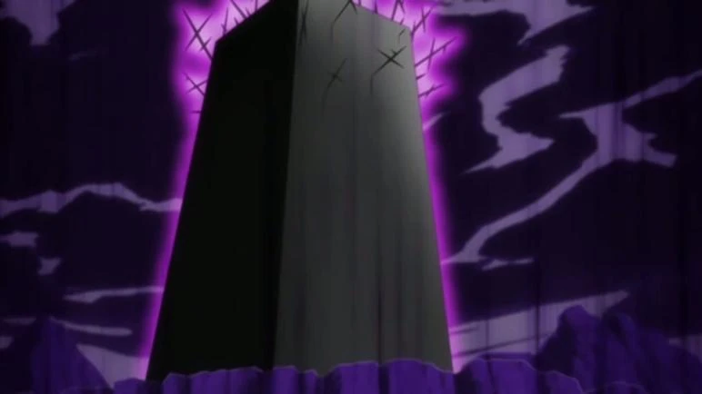

Information about Hado spells
Hado spells is one of the variations of Kido spells these spells are manuly used for attack. just like the bakudo spells hado spells range from level 1- level 99 the higher the level the more power full the attack will be. Just like Bakudo spells Hado spells have incantations as well this will increase the spells power and effectiveness. Will hado and bakudo spells are know for haveing up to 99 levels there is a level 100 hado spell this means that there are very few who can use this and this is due to the fact that the higher the level the more difficult it is to be able to use the spell even with out an incantation. There are still many level of Hado spells that are unknow.
5 strongest Hado spells
- Hado 100:Tenrai no ken (heavenly Blade)
- Hado 99:Goryutenmetsu (five swirling dragons of destruction)
- Hado 96:Itto Kaso (single blade cremation)
- Hado 91:Senju Koten Taiho
- Hado 90:Kurohitsugi (Black Coffin)

Informstion about incantations
The use of incantations is to increase the effectiveness of the spell. There are many who can use Bakudo and Hado spells with out the use of an incantation but this does decrease the spells power and effectiveness. one exaple of an incatation is Hado number 90 Kurohitsugi incantations which is."The oozing crest of corruption. The arroganjt vessel of madness! Deny the seething urgel stun and flicker! Disrupt the sleep! The crawling queen of iron! The eternally self-destructing doll of mud! Unite! repulse! Fill the earth and know your own powerlessness" by using the full incantations of a level 90 Hado spell makes the spell much stronger thank it would be with out the use of an incantation.